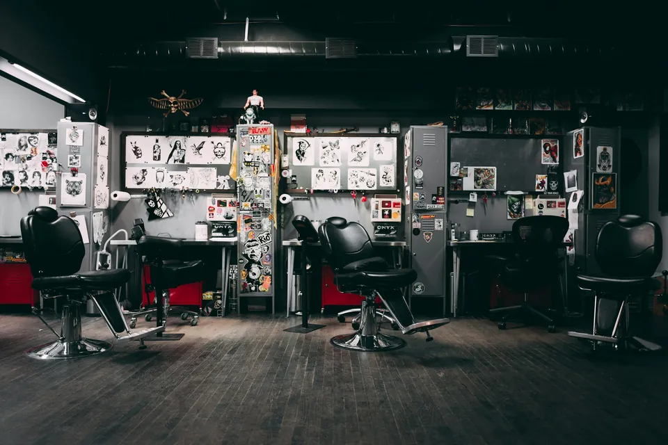

Florianópolis · Brazil
LU
LU
VALENTE
Bold lines, vivid color, and the soul of old school & American traditional tattooing.

About
Lu Valente
Lu is a tattoo artist specialized in old school and American traditional, blending bold linework, vivid color and a deep love for classic tattoo references. She also works in black and grey when the idea calls for it.
Off the machine, she paints — watercolor and ink, always in the same visual language as her flash sheets.
Tattoos Done
A taste of what's already out of the machine
A preview of the work. The full gallery has a lot more.